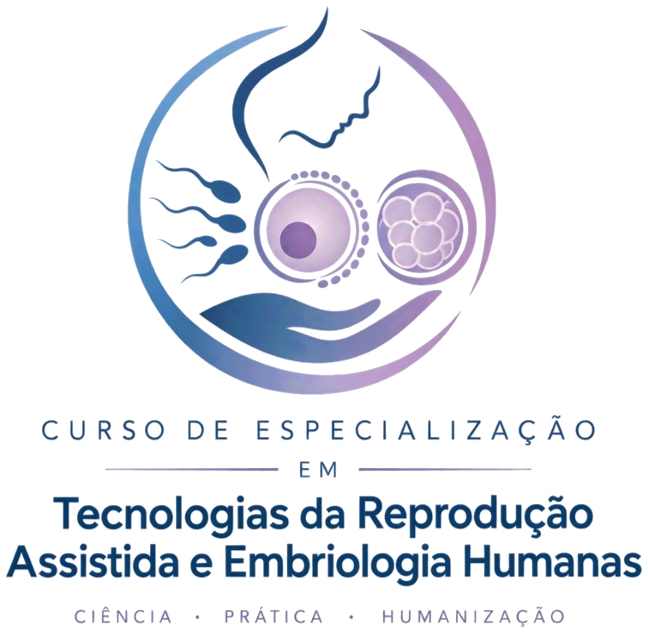

Pós-graduação Lato Sensu · 1ª edição
Tecnologias da Reprodução Assistida e Embriologia Humanas
Aulas teóricas a distância e prática presencial. Você aprende a teoria com professores da UFRGS e observa a rotina real de uma clínica de reprodução assistida.

Objetivos do curso
Objetivo geral
Oferecer criteriosa revisão de conceitos clássicos de Fisiologia, Anatomia e Histologia Reprodutivas, bem como Embriologia e Genética, de forma a relacionar o conhecimento teórico com o aprendizado e as situações práticas adotadas em clínica e laboratório de reprodução humana assistida. Os conteúdos também focam em aspectos da humanização, da ética e do bem-estar dos pacientes.
Objetivos específicos
Cursos & Módulos da Formação
Cards interativos: Passe o mouse ou clique no card para ver os professores responsáveis, a ementa detalhada e as datas de início e término.
45 horas de imersão observacional na Clínica Nilo Frantz
As atividades práticas acontecem na Unidade Porto Alegre. Você acompanha presencialmente a rotina de uma clínica de reprodução humana assistida, da entrevista inicial com os pacientes ao final de um ciclo, em atividades clínicas e laboratoriais.
As avaliações também são presenciais.
Estrutura acadêmica completa
13 disciplinas teóricas e práticas organizadas ao longo de 18 meses (390 horas).
Corpo docente
Equipe UFRGS
Equipe externa
Investimento & Formas de Pagamento
Valores transparentes e facilitados com selo de certificação UFRGS + Nilo Frantz.
Pagamento no ato da confirmação de vaga
Parcelamento em 15 mensalidades fixas sem juros no boleto ou cartão
Pagamento único no PIX com aprovação imediata (Economia de R$ 1.240,00)
Formas de Pagamento Aceitas:
O que dizem os profissionais e alunos
Depoimentos de quem transformou a carreira em Reprodução Assistida com imersão prática.
Cronograma previsto
- Período de inscrições
- Previsão das matrículas
- Previsão de início do curso
- Previsão de término do curso
O curso acontece na modalidade EaD nas aulas teóricas. As atividades práticas e as avaliações acontecem de forma presencial.
Todas as atividades acontecem em finais de semana alternados a partir do início do curso, com aulas na sexta-feira (noite) e no sábado (manhã e tarde).
Fale com a secretaria
Tire dúvidas e faça sua inscrição pelo e-mail ou pelos telefones abaixo.
especializacaorha@ufrgs.br- Secretária
- Marilisa Garcia Machado
- Telefones
- (51) 3308-2053
(51) 3308-3789 - Coordenadora
- Adriana Bos-Mikich